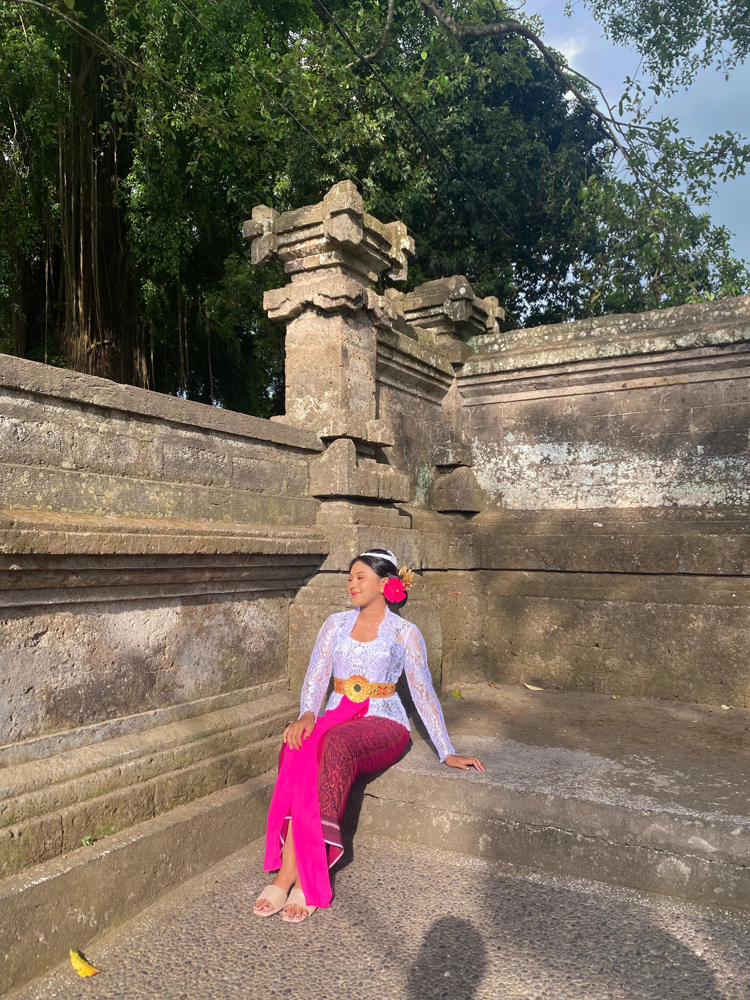

A Little About Me
Saya Ni Luh Putu Lisa Febriani, Saya lahir pada 17 Februari 2005, Saya berasal dari Tabanan. Saya selalu memiliki ketertarikan untuk belajar dan mencoba hal-hal baru, baik itu dalam dunia akademik maupun dalam hobi saya. Saat ini menjalani kehidupan sebagai Mahasiswa Semester 3 di ITB STIKOM Bali. Sejak kecil, saya suka menari dan mengikuti berbagai lomba tari. Selain menekuni dunia tari, saya juga aktif dalam kegiatan kampus dan organisasi. Saya bergabung dengan UKM TARI TRADISIONAL yang ada di ITB STIKOM BALI dan berperan sebagai Sekretaris II. Melalui organisasi ini, saya belajar tentang pentingnya bekerja sama dalam tim, kepemimpinan, dan pengabdian kepada masyarakat. Saya memiliki mimpi untuk menjadi penari yang hebat dan menjadi programmer yang terkenal. Untuk mewujudkan mimpi tersebut, saya akan terus belajar dan mengembangkan diri. Saya akan mengikuti berbagai pelatihan dan workshop untuk meningkatkan keterampilan saya dalam bidang tari dan teknologi. Saya yakin bahwa dengan kerja keras dan semangat yang tinggi, saya dapat mencapai kesuksesan di bidang yang saya cintai. Saya berharap dapat menjadi inspirasi bagi generasi muda untuk terus mengejar passion dan memberikan kontribusi positif bagi dunia.